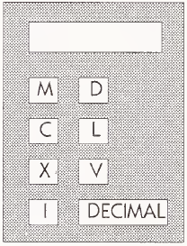

Roman Calculator Construction
The Roman calculator described in this case study would really have helped the ancient Romans who depended on this sort of calendar.
Calculators have revolutionized mathematics, making hand computation of square roots obsolete. This program will control a calculator that takes a Roman numeral and converts it to its decimal equivalent.
Problem Statement
Write and test a program that reads a Roman numeral expressed in Roman digits and prints the corresponding decimal value.
The program should assume that the input consists of  one line, containing (only) a legal Roman numeral less than 3999. For testing purposes, the program should prompt for input and print the output. Assume that the tested program, with input and output function calls appropriately replaced, will become the processor for a Roman numeral translator. The translator will resemble a calculator and is pictured on the right.
Description of Roman Numerals
Values less than 3999 in the Roman numeral system are written using "digits" whose decimal equivalents are given in the table. (Additional conventions for writing values larger than 3999 are not discussed here. See, for instance, The World of Mathematics, by J. R. Newman, Simon and Schuster, 1956, for further information.)
| Roman digit | Decimal equivalent |
|---|---|
| M | 1000 |
| D | 500 |
| C | 100 |
| L | 50 |
| X | 10 |
| V | 5 |
| I | 1 |
Roman numerals are composed using the following rules.
Digit order: Roman digits are written in nonascending order, and digit values are added to produce the represented value, except for prefixes as mentioned below.
Number of occurrences: No more than three occurrences of M, C, X, or I may appear consecutively, and no more than one D, L, or V may appear at all.
Prefixes: The digits C, X, and I can be used as prefixes, and their value is then subtracted from rather than added to the value being accumulated, as follows:
One C may prefix an M or a D to represent 900 or 400; the prefixed M is written after the other M's, as in MMMCM. The digits following the M or D represent a value no more than 99.
One X may prefix a C or an L to represent 90 or 40; the prefixed C is written after the other C's. The digits following the C or L represent a value no more than 9.
One I may prefix an X or a V to represent 9 or 4. The prefixed digit must appear at the end of the numeral.
Some examples:
| Decimal number | Roman numeral |
|---|---|
| 1987 | MCMLXXXVII |
| 1999 | MCMXCIX |
| 339 | CCCXXXIX |
Analysis
4.1 What is the decimal value of each of the following Roman numeral values: MCMLII, MMCDV, CXGIX?
Analysis
4.2 How is each of the following decimal values written using Roman numerals: 1988, 1000, 1349?
Analysis
4.3 For each of the following, determine its value if it's a legal Roman numeral, or describe which of the rules listed in the problem statement that it violates: XMICVC, XLIX, IIX, XIXIV.